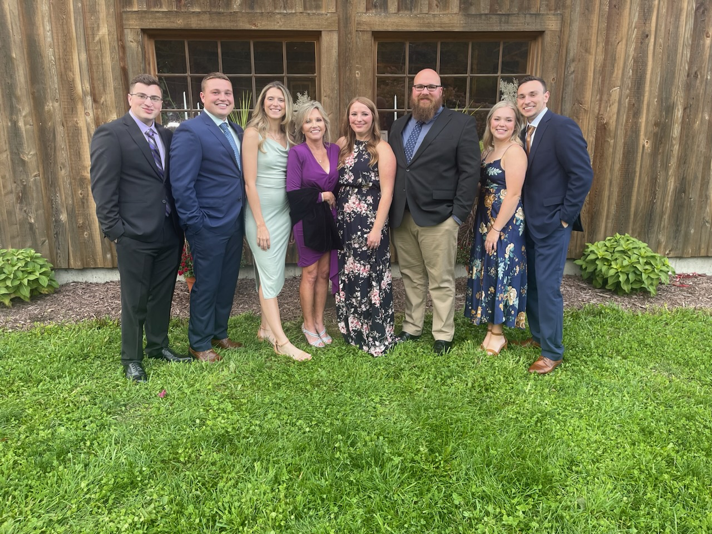

Justin Montagne
Photo Gallery
Image of my family and I at my cousin's wedding

This is a picture of me and my family at my cousin's wedding on September 24, 2022. The wedding was in Syracuse, New York and it took place at a very nice barn. I really like this picture because it shows a snapshot of a very fun night with my family. This is also the first wedding in my extended family that didn't involve my immediate family. The only other weddings that we have had were for my sister, the 5th from the left, and my brother, the 2nd from the left. This is the first family wedding where we could all just relax and have a good time rather than being part of the wedding party.